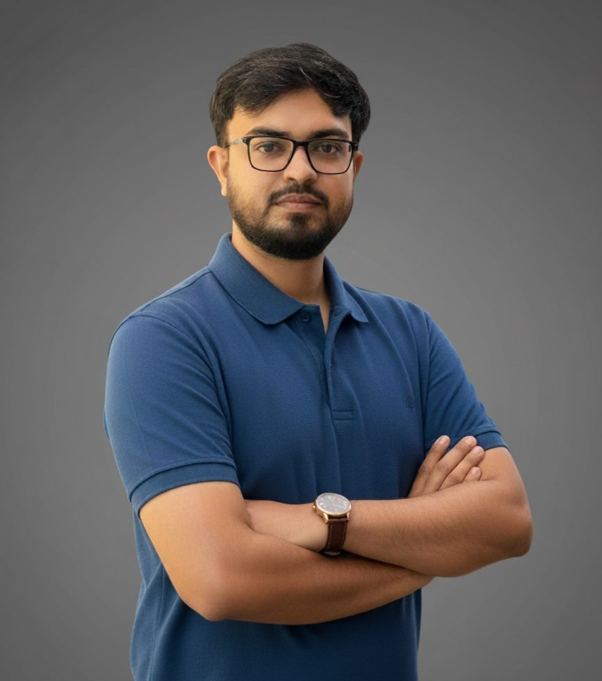

Continuous Learning
Sr. Software Engineer, Lead @ GoZayaan
Step into my realm! This site offers an in-depth look at my projects, insights, and career journey.

Hi! I am Faisal Porag. As an accomplished Computer Science and Engineering professional, I have established a distinguished career in the tech industry. Currently, I hold the position of Sr. Software Engineer, Lead at GoZayaan. With a wealth of experience in both industry and academia, I am dedicated to driving technological innovation and achieving exceptional results.
Throughout my career, I've had the privilege of leading cross-functional teams through complex development cycles, from conceptualization to deployment. My expertise extends to architecting robust systems that meet stringent performance and reliability standards, while also optimizing for maintainability and scalability. I thrive in agile environments, where my ability to adapt quickly and collaborate effectively has been instrumental in delivering solutions that exceed client expectations.
I am deeply committed to continuous learning, staying abreast of emerging technologies, and adapting quickly to industry trends. My proactive approach to skill development and mentorship has empowered teams to innovate and achieve excellence in every project. I am eager to bring my expertise to a new challenge where I can contribute to shaping the future of an organization committed to pushing the boundaries of technology and achieving sustainable growth.
Beyond technical proficiency, I am passionate about fostering an environment where knowledge sharing and skill development propel team success. I am excited about the prospect of leveraging my skills to contribute to innovative projects that push the boundaries of technology and drive sustainable growth.
My diverse skill set and extensive experience make me a valuable asset to any team. I am committed to leveraging my hard work, dedication, and determination to make significant contributions in the future.